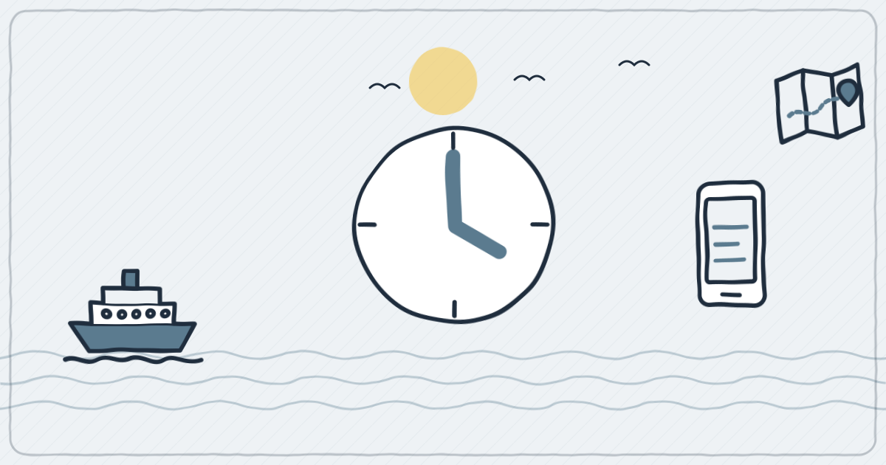

Ship's Time Explained: Clocks, Ports and All-Aboard

Ships crossing time zones usually move the clocks by one hour overnight, announced the evening before. On itineraries that hop zones daily, many ships keep a single ship's time for the whole cruise even when the port clock disagrees. All-aboard is always in ship's time, so set a watch to it and stop trusting your phone.
Cruise ships do cross time zones, and they handle it in one of two ways. Either the bridge moves the clocks an hour at a time, overnight, with a note in the daily program, or the ship picks one time for the entire voyage and ignores what the ports do. Both are fine. What gets people into trouble is a phone that updates itself to the wrong zone and a tour operator who says "back by four" in local time while the ship is counting down in its own.
Do cruise ships change their clocks?
When an itinerary moves steadily in one direction, yes. Transatlantic crossings, Hawaii round trips and repositioning cruises move the clock an hour on several nights, typically around 2 a.m., usually ahead of a sea day. Westbound you gain an hour and sleep in; eastbound you lose one.
When an itinerary zig-zags between zones every day or two, as many Caribbean routes do, lines often fix a single ship's time for the week instead. Dinner stays at 6, the show stays at 8, and the clock on board may be an hour off the clock ashore. The daily program and the cruise app will tell you which system your ship uses; if in doubt, ask at guest services on the first day.
Where the time changes bite on common itineraries
| Route | Time difference | How ships usually handle it |
|---|---|---|
| Alaska from Vancouver or Seattle | Alaska is 1 hour behind Pacific | One change northbound, one back southbound |
| Eastern Caribbean from Florida | St. Maarten, St. Thomas and Puerto Rico are 1 hour ahead in winter, level in summer | Many ships stay on Florida time |
| Western Caribbean from Florida | Cozumel, Jamaica and Grand Cayman are 1 hour behind in summer, level in winter; Roatán and Belize 1 hour behind in winter, 2 in summer | Ship's time usually stays on Florida; tours run on local |
| Western Caribbean from Galveston | Cozumel is 1 hour ahead of Texas in winter, level in summer | Ship's time often stays on Central |
| Bermuda from New York or Boston | Bermuda is 1 hour ahead year-round | Ships may switch or stay on Eastern |
| Hawaii from Vancouver or Los Angeles | 2–3 hours behind the West Coast, depending on season | Clocks move back an hour on several nights outbound |
| Transatlantic | 5–6 hours between the US East Coast and Europe | One hour per night across the sea days |
The Caribbean quirks come from daylight saving. Most islands do not change their clocks in March and November, so the gap with Florida or Texas flips twice a year. Quintana Roo, where Cozumel sits, also stopped observing daylight saving, which is why it lines up with Eastern Standard Time all year.
How to stop your phone lying to you
- Before you sail, turn off automatic time zone (and automatic date and time, if that is a separate switch) in your phone's settings.
- Set the clock manually to ship's time on embarkation day, then change it by hand only when the daily program announces a clock change.
- Wear a cheap watch set to ship's time as the final authority, or screenshot the all-aboard time each morning.
- Keep cellular data off at sea unless you have a cruise roaming plan; the ship's maritime network charges by the megabyte.
Smartwatches follow the phone, so one fix covers both. Ship clocks in the atrium, the lifts and on cabin TVs show the official time if you ever lose track.
Will I lose sleep when the clocks change at sea?
Only on eastbound nights, and only an hour at a time. Most lines schedule the change before a sea day so the lost hour disappears from a morning with nothing in it. The exception is a change scheduled before an early tender or tour; check the program before booking anything that starts at 7 a.m. the morning after a jump forward. Clock-change nights also make the morning announcements feel earlier than they are, as covered in cruise ship announcements explained.
Jet lag on a fly-cruise
The ship's gentle hour-a-night adjustments are not what leaves people groggy. The flight to the port does that.
- Vancouver or Calgary to Florida: two or three hours ahead. A hotel night before sailing is enough, and embarkation morning will feel early.
- Toronto or New York to the Mediterranean: six hours ahead; Vancouver or Los Angeles, nine. Arrive two nights early, get outside in daylight on the first afternoon and skip the long nap.
- Transatlantic westbound: the easiest jet lag in travel. You gain an hour on five or six nights and step off in New York or Florida already adjusted.
- Hawaii round trips: three hours each way spread across sea days, so the body barely notices.
Keeping in touch with home across the zones
Each clock change shifts the gap between you and the people at home, which matters for calls to kids, elderly parents or an office. Note the new difference each time the program announces a change, and remember that friends at home on daylight saving may have changed their own clocks mid-cruise in March or November.
Want this checked for your own sailing? A licensed cruise consultant can price it up and answer questions for free, with no obligation.
Ask a cruise expert →One clock to rule them all
Ship's time governs dinner, shows, tenders and the gangway. Read the program every evening, keep a watch on ship's time, give every all-aboard a 30-minute cushion, and let your phone be the one that is confused.
Still wondering?
What is ship's time on a cruise?
It is the official clock on board, set by the bridge and shown in the daily program and app. It may match local time in port or sit an hour or two off. Every onboard event and every all-aboard deadline runs on ship's time, whatever the clock tower ashore says.
Does my phone change time automatically on a cruise?
It tries to, and that is the problem. It may pick up a local network in port, the ship's maritime network at sea or nothing at all, so it can jump to the wrong zone without warning. Turn off automatic time zone when you board and set the phone to ship's time by hand.
Which night do the clocks change on a cruise?
Usually in the small hours before a sea day, so a lost hour costs you a lie-in rather than an early excursion. The change is printed in the daily program delivered the evening before, repeated in the app, and often mentioned at the evening show.